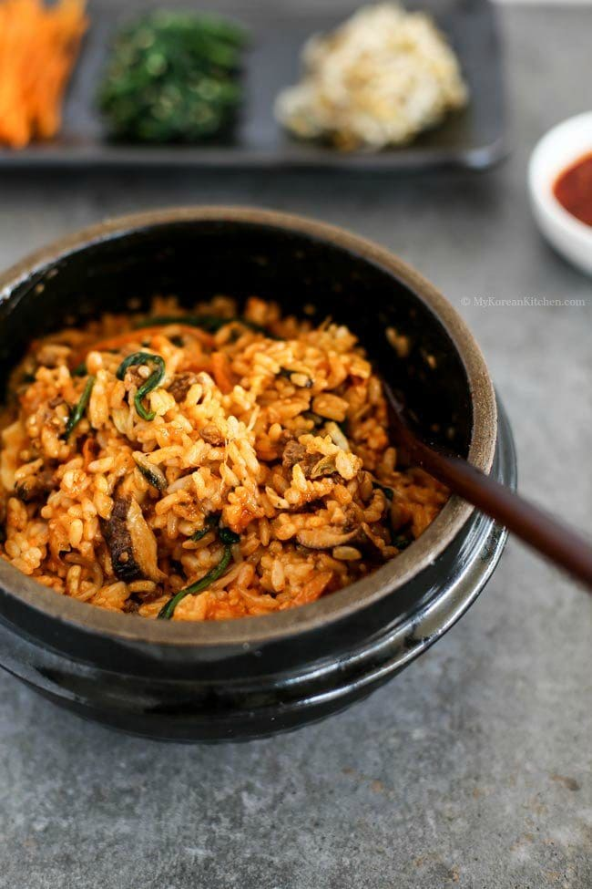

Home
Bibimbap

Description
Bibimbap simply translates to “mixed rice with meat and assorted vegetables“.
You can make endless variations to this dish depending on your preference and dietary requirements
(e.g. microgreens bibimbap) and also based on the dish/bowl it is served in
(e.g. dolsot bibimbap and yangpun bibimbap).
Ingredients
Meat and Meat Sauce
- 100g/3.5 ounces beef mince
- 1 Tbsp soy sauce
- 1 Tbsp sesame oil
- 1 tsp brown sugar
- 1/4 tsp minced garlic
Vegetables and Others
- 250g (0.6 pounds) seasonded spinach
- 350g (0.8 pounds) seasoned bean sprouts
- 100g (3.5 ounces) shiitake mushroom
- 120g (4.2 ounces) carrots (1 small)
- 1/2 tsp fine sea salt
- 3 to 4 searving portions of steamed rice
- 3 or 4 eggs
- Cooking oil
- Seasoned seaweed
Bibimbap Sauce
- 2 Tbsp gochujang
- 1 Tbsp sesame oil
- 1 Tbsp sugar
- 1 Tbsp water
- 1 Tbsp roasted sesame seeds
- 1 tsp vinegar
- 1 tsp minced garlic
Steps
- Place white chocolate chips, heavy cream, and 1/8 teaspoon peppermint extract into a microwave-safe bowl.
Microwave at 50% power in 30 second intervals, stirring after each interval, until melted and combined.
Place mixture, uncovered, in the refrigerator until completely chilled, about 1 hour.
- Preheat the oven to 350 degrees F (175 degrees C). Line an 8x8-inch square pan with enough parchment paper
to have overhang on all sides.
- In a small bowl or measuring cup, stir espresso powder and hot water together until dissolved.
- In a medium bowl, whisk together flour, cocoa powder, salt, baking soda, and baking powder until thoroughly combined.
- Beat butter, white sugar, and brown sugar together in a large bowl until light and fluffy. Add in egg and beat until thoroughly combined.
Add in espresso mixture, vanilla extract, and 1/2 teaspoon peppermint extract and mix until combined. Pour in half of the flour mixture and mix until just combined.
Add in remaining flour mixture and mix until just combined—dough will be somewhat thick.
Stir in chocolate chips and crushed candy canes. Spread dough into the prepared pan in an even layer.
- Bake in the preheated oven until the bars look just set, 25 to 30 minutes.
Remove from the oven and allow to cool completely in the pan, about 30 minutes.
- Remove chilled white chocolate mixture from the fridge.
Whip on medium-high speed with an electric mixer until mixture holds stiff peaks.
Spread white chocolate frosting in a thin even layer over the top of the cooled bars and sprinkle with additional crushed candy canes.
Cut into 16 bars.